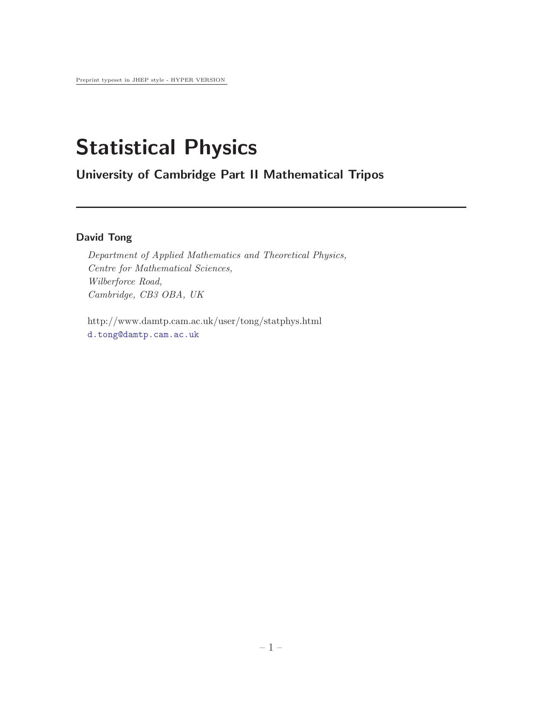

Statistical Physics
David Tong

1. The Fundamentals of Statistical Mechanics
1.1 Introduction
1.2 The Microcanonical Ensemble
1.2.1 Entropy and the Second Law of Thermodynamics
1.2.2 Temperature
1.2.3 An Example: The Two State System
1.2.4 Pressure, Volume and the First Law of Thermodynamics
1.2.5 Ludwig Boltzmann (1844-1906)
1.3 The Canonical Ensemble
1.3.1 The Partition Function
1.3.2 Energy and Fluctuations
1.3.3 Entropy
1.3.4 Free Energy
1.4 The Chemical Potential
1.4.1 Grand Canonical Ensemble
1.4.2 Grand Canonical Potential
1.4.3 Extensive and Intensive Quantities
1.4.4 Josiah Willard Gibbs (1839-1903)
2. Classical Gases
2.1 The Classical Partition Function
2.1.1 From Quantum to Classical
2.2 Ideal Gas
2.2.1 Equipartition of Energy
2.2.2 The Sociological Meaning of Boltzmann's Constant
2.2.3 Entropy and Gibbs's Paradox
2.2.4 The Ideal Gas in the Grand Canonical Ensemble
2.3 Maxwell Distribution
2.3.1 A History of Kinetic Theory
2.4 Diatomic Gas
2.5 Interacting Gas
2.5.1 The Mayer f Function and the Second Virial Coefficient
2.5.2 van der Waals Equation of State
2.5.3 The Cluster Expansion
2.6 Screening and the Debye-Hückel Model of a Plasma
3. Quantum Gases
3.1 Density of States
3.1.1 Relativistic Systems
3.2 Photons: Blackbody Radiation
3.2.1 Planck Distribution
3.2.2 The Cosmic Microwave Background Radiation
3.2.3 The Birth of Quantum Mechanics
3.2.4 Max Planck (1858-1947)
3.3 Phonons
3.3.1 The Debye Model
3.4 The Diatomic Gas Revisited
3.5 Bosons
3.5.1 Bose-Einstein Distribution
3.5.2 A High Temperature Quantum Gas is (Almost) Classical
3.5.3 Bose-Einstein Condensation
3.5.4 Heat Capacity: Our First Look at a Phase Transition
3.6 Fermions
3.6.1 Ideal Fermi Gas
3.6.2 Degenerate Fermi Gas and the Fermi Surface
3.6.3 The Fermi Gas at Low Temperature
3.6.4 A More Rigorous Approach: The Sommerfeld Expansion
3.6.5 White Dwarfs and the Chandrasekhar limit
3.6.6 Pauli Paramagnetism
3.6.7 Landau Diamagnetism
4. Classical Thermodynamics
4.1 Temperature and the Zeroth Law
4.2 The First Law
4.3 The Second Law
4.3.1 The Carnot Cycle
4.3.2 Thermodynamic Temperature Scale and the Ideal Gas
4.3.3 Entropy
4.3.4 Adiabatic Surfaces
4.3.5 A History of Thermodynamics
4.4 Thermodynamic Potentials: Free Energies and Enthalpy
4.4.1 Enthalpy
4.4.2 Maxwell's Relations
4.5 The Third Law
5. Phase Transitions
5.1 Liquid-Gas Transition
5.1.1 Phase Equilibrium
5.1.2 The Clausius-Clapeyron Equation
5.1.3 The Critical Point
5.2 The Ising Model
5.2.1 Mean Field Theory
5.2.2 Critical Exponents
5.2.3 Validity of Mean Field Theory
5.3 Some Exact Results for the Ising Model
5.3.1 The Ising Model in d=1 Dimensions
5.3.2 2d Ising Model: Low Temperatures and Peierls Droplets
5.3.3 2d Ising Model: High Temperatures
5.3.4 Kramers-Wannier Duality
5.4 Landau Theory
5.4.1 Second Order Phase Transitions
5.4.2 First Order Phase Transitions
5.4.3 Lee-Yang Zeros
5.5 Landau-Ginzburg Theory
5.5.1 Correlations
5.5.2 Fluctuations
Back to Home